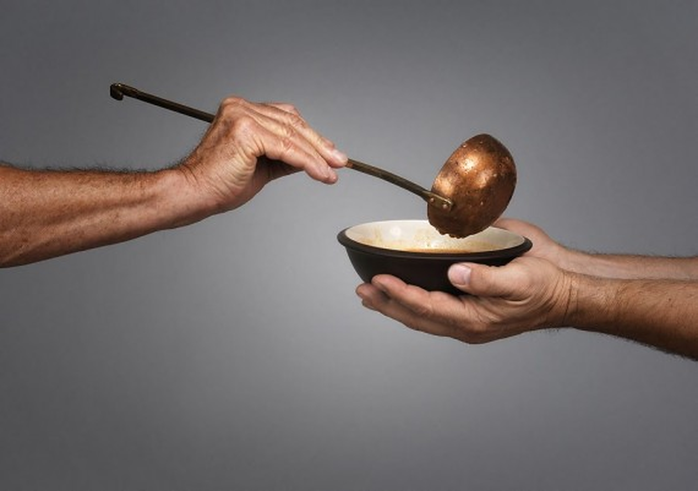
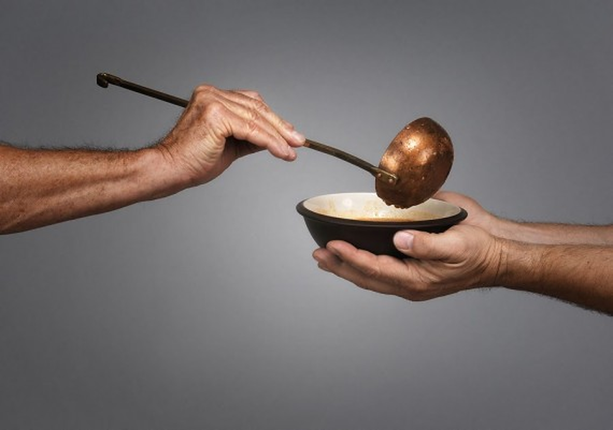

{kind=link}
"189.2 million people i.e. 14% of our population is undernourished"
 


HOW THIS WEBSITE IS HELPS TO OUR SOCIETY
Our main aim of this project to feed the needy and hungry with untouchable edible surplus food. To raise awareness about food loss and food waste amongst citizens and bring about behavioral change in them to prevent food waste at home, school or at workplace through guidance and sharing of good practices.
and reaching each and every corner of our country to remove the hunger. And inspiring more young volunteers who involves in the welfare of social activities.
KEY FACTS ABOUT HUNGER IN INDIA
" India is home to the largest undernourished population in the world."
01
02
"20% of children under 5 are underweight."
03
" 34.7% of children under 5 years of age are stunted."
04
" 51.4% women in the reproductive age (15-49 years) are anaemic."
How Can You Help Us?
Your Precisious time for feed the poor peoplewhen they needed, with your simple trasportation facility when you are free.